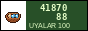

a little lamb that lives in your browser
☁ FEED when the food bar is low. A lamb eats about every 4 hours.
☁ PLAY makes it happy but hungry and tired.
☁ SLEEP puts it to bed. It wakes up by itself when it's rested. Press again to wake it early (it will be grumpy).
☁ The lamb lives in your browser. If you open the page on another phone it's a different lamb. If you clear the browser, your lamb goes to the jailoo (summer pasture) and you get a new one. It doesn't die. I don't make games where things die.
☁ It keeps living when the page is closed. Come back and see!
Baatyr (Talas) · Bulut (Nurzhan) · Kozu Jr. · Pakhta · Shrek · Aki · Mama's Lamb · Kurut · Bobo · Ak Kar · Jorgo (it's not a horse, Timur) · Kebab (WHY) · Alma
